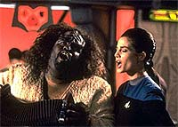
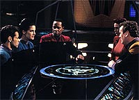
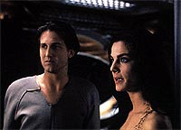
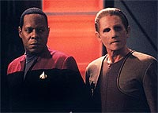
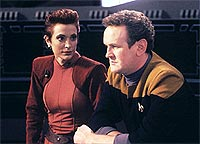

MANCHETE
DO EPISÓDIO
Show
de tecnobaboseira e bom papel
para Dax equilibram desempenho
Episódio
anterior | Próximo
episódio
Sinopse:
Data Estelar:
desconhecida.
Um jovem Trill, de nome Arjin,
chega à estação para dar continuidade em seus treinamentos
visando uma futura união com um simbionte. Nesta parte de seus
estudos ele deve interagir com um instrutor Trill (no caso, Jadzia
Dax) já unido, que lhe oferecerá uma perspectiva sobre como é a
vida de um Trill unido.

Ao
mesmo tempo, tal instrutor deve se assegurar de que o candidato
poderá um dia ter a honra também de se unir a um simbionte.
Arjin está muito nervoso e inseguro, pois o simbionte Dax (em
hospedeiros anteriores, como Lela e Curzon) é famoso por eliminar
sumariamente candidatos do programa de seleção. A própria
Jadzia foi eliminada por Curzon Dax, porém retornou ao programa e
ironicamente acabou ficando com o próprio simbionte Dax, após a
morte de Curzon.
Arjin considera Jadzia um hospedeiro totalmente atípico, que
gosta de luta-livre, jogos de azar e bebidas. Os dois acabam, por
acidente, retornando de uma missão no quadrante Gama com uma
massa de protoplasma em um das naceles do explorador. Tal massa é
posta em um campo de contenção no laboratório de ciências para
ser analisada no dia seguinte. Interagindo com Arjin, Jadzia
descobre que ele não parece ter nenhuma aspiração como pessoa
além de se unir a um simbionte. Ben Sisko aconselha que Dax não
pode simplesmente "lavar as mãos" sobre a atitude de
Arjin pois isto não seria benéfico ao jovem Trill.
Entretanto, quando Jadzia "aperta" Arjin sobre seus
reais objetivos na vida, ele não reage bem e critica as atitudes
dela como hospedeiro, deixando-a sozinha no laboratório.
Uma praga de voles Cardassianos (uma espécie do roedor) assola a
estação e acaba por cortar o suprimento de força para o laboratório.
Sem um campo de contenção a tal "massa" começa a se
expandir.

Jadzia
descobre que tal "massa" é na realidade um
"protouniverso" contendo vida. Sisko decide que tal
"protouniverso" deve ser devolvido "ao lugar onde
ele pertence", no quadrante Gama. Jadzia se encontra com
Arjin no bar do Quark e lhe conta com foi o seu próprio processo
de seleção, e como após Curzon eliminá-la ela ganhou uma força
interior que nunca julgou existir, ingressou novamente no programa
e conseguiu finalmente a união.
Arjin aceita a sinceridade dela e reconhece que se ele quiser
realmente se unir um dia deve também encontrar o que é realmente
importante para ele na vida. Devido às excelente habilidades de
piloto de Arjin, Jadzia o convida para o arriscado transporte do
"protouniverso" pela Fenda Espacial. Os dois embarcam na
missão que, com sucesso, retorna o "protouniverso" a
local de origem. Jadzia vai se despedir de Arjin, que diz que
agora "sabe o que tem de fazer".
Comentários:
Uma das mais absurdas e confusas tramas de sci-fi da série, o
infame "protouniverso", e a fraca caracterização de
Arjin (e a ainda pior atuação de Geoffrey Blake no papel) jogam
por terra este segmento de Deep Space Nine. Existe ainda
muito do que se gostar no episódio como um bocado de humor de
qualidade, em que podemos rir com os personagens e não dos
personagens, e um bocado de caracterização para Jadzia.
Infelizmente a interminável sucessão de rescritas pelas quais o
episódio passou se mostra claramente, em um produto mal acabado e
pouco profissional. Sem querer "bancar Deus" sobre o
assunto, vamos aos detalhes.
A trama principal do episódio junta duas completas "famílias
de clichês trekkers". A primeira é aquela em que
descobrimos uma "coisa desconhecida" (no nosso caso o
"protouniverso"), que depois se mostra um perigo para a
sobrevivência de "muita gente" (no presente caso a estação
e provavelmente uma significante porção da nossa galáxia), os
personagens descobrem uma forma de lidar com a ameaça destruindo
tal "coisa", a "coisa" acaba por se revelar
mais uma "inocente e inteligente forma de vida" e
obviamente os personagens não podem destruí-la e usam alguma
solução alternativa para resolver tal ameaça.

Como
aplicado neste episódio, devido à fraca execução, tal conceito
elimina qualquer suspense, pois sabemos inicialmente, ponto a
ponto o que vai acontecer, um verdadeiro exercício de paciência
para os espectadores. Outro grande problema é o excesso de
"tecnobaboseira" (que faz o infame, e pior uso possível
dessa virtual praga dos roteiros de Jornada, serviço de ajudar a
levar a trama ponto a ponto) que chega a ser nauseante e tolo.
Infinitas questões abundam desta trama, tais como, por que diabos
o simples fato de retornar o "protouniverso" para
"onde ele pertence" (sendo lá onde isto for) o fará
parar de se expandir?
(O conceito do "protouniverso" em si é interessante,
porém é algo "tão grande" que não poderia ser usado
em um episódio a menos que muito esforço fosse posto sobre ele.
Tomem por exemplo o fato de Sisko decidir, em uma hora, sobre o
destino de um Universo inteiro com essencialmente nenhuma informação
sobre o funcionamento intrínseco deste. Simplesmente mal
escrito.)
A segunda família de clichês é aquela em que dois personagens
entram em alguma espécie de "conflito" (no nosso caso,
Arjin e Jadzia) e, ao seu final, após viverem juntos algumas
cenas de "ação" e "suspense" (obviamente
para satisfazer alguma espécie de quota no episódio em questão),
colocam suas "diferenças" de lado com extrema
facilidade. Arjin tem uma caracterização muito fraca, muito
transparente, não faz a audiência simpatizar com ele e também
tem pouco valor de entretenimento para o público, um virtual
zumbi.

Vamos
aos pontos de humor que funcionaram: Sisko inicialmente
"mandando" que O'Brien ponha os feisers em tonteio, pois
ele queria os voles vivos e depois (após um dos infames roedores
Cardassianos cortar um cabo de força no laboratório) ele manda
O'Brien colocar os feisers para matar os roedores e diz (como na
canção): "...no more mister nice guy"; Quark sendo
afetado pelo desruptor sônico de O'Brien foi um barato (e o
desgosto de Kira por Quark também estava presente com efeito); a
forma como Arjin (e a audiência) confundem o instrutor de
luta-livre de Jadzia com um amante dela é brilhante (e com uma
sutileza raramente encontrada em nosso típico "humor
trekker"), com direito a uma estonteante Terry Farrell
"molhadinha e de toalhinha" e o seu recado de despedida
ao seu (a ser descoberto mais tarde) instrutor: "Foi
divertido. FOI BRUTAL, mas foi divertido"; Bashir mandando a
O'Brien a "solução que funcionou em Hamlim" foi também
excelente; O'Brien falando com gul Evek (personagem que seria
visto novamente em "The Maquis", a seguir, nesta
mesma segunda temporada) pelo subespaço e por último Quark
tentando animar Arjin com a sua própria história de desgraça
existencial.
(A cena dos "traseiros falantes" não foi ruim mas não
está no mesmo nível das citadas acima.)

Jadzia
recebe uma quantidade mais do que saudável de caracterização:
revisitamos os seus jogos de Tongo com os Ferengis (como
introduzido em "Rules
Of Acquisition"), descobrimos que ela pratica
luta-livre (o que é interessante visto os eventos em "Blood
Oath", mais tarde nesta mesma segunda temporada),
lembramos o seu hobby de colecionar compositores obscuros (como
introduzido em "Melora"), descobrimos que ela tem
familiaridade com a cultura Klingon (ver mais em "Blood
Oath") etc.
Um pequeno problema aqui foi "reduzir" um bocado as
habilidades de pilotagem de Jadzia para fazer o episódio
funcionar. Apesar de não ser relacionado especificamente com
Jadzia, o fato do simbionte Dax ser o "terror dos iniciados
Trill" é uma idéia muito interessante. Ainda mais
interessante é o fato de que foi Curzon que eliminou Jadzia do
programa e que ela é que acabou com o simbionte Dax.
(Na realidade ainda existe um elemento adicional de história
entre Curzon e Jadzia que seria revelado em "Facets",
da terceira temporada.)
O relacionamento entre Ben e Jadzia cresceu um bocado nesta
temporada e foi muito interessante ser Sisko, o antigo pupilo de
Curzon, a apontar que Jadzia estaria prestando um grande desserviço
a Arjin por não confrontá-lo sobre as suas inseguranças e
mostrar que ser duro com ele, assim como Curzon foi com ela, seria
necessário. Vimos também as dúvidas de Jadzia Dax sobre si
mesma e mesmo em vários diálogos com Arjin ela se refere a
Jadzia (antes de se unir) na terceira pessoa. Bem interessante.
A direção de David Livingston foi inventiva como sempre. Reparem
na tomada pouco antes da cena dos "traseiros falantes",
em que a câmera é colocada dentro de um console no OPS e
consegue focalizar Ben Sisko deixando o seu escritório. Também
é interessante Jadzia entrando no escritório de Ben e retomando
uma partida de xadrez com ele, que introduz o diálogo entre os
dois, a melhor cena do episódio. Um óbvio calcanhar de Aquiles
no trabalho do diretor foi a caracterização de Arjin.
Farrell teve a sua melhor atuação na série até aqui e soou
bastante verdadeira na maioria dos pontos. Brooks esteve tão bem
ou melhor e o resto do elenco regular mostrou a competência
usual.
Geoffrey Blake prejudicou grosseiramente o episódio. Taylor,
voltando ao papel do "chefe" Klingon, visto inicialmente
em "Melora",
e Poe foram hilários. Norris não comprometeu.
O diário de Sisko sobre os Borgs, enquanto decidindo o destino do
"protouniverso", foi apropriado. O problema é que, além
da decisão ter sido tomada antes do problema surgir, sair de tal
diário e entrar na cena posterior com Jake foi um pouco esquizofrênico
demais, para dizer o mínimo.
A conversa de Sisko e Jake sobre a namorada de Jake, uma garota
Dabo já citada anteriormente na série, funcionou bem, até
melhor do que a da semana passada sobre Jake entrar ou não na
Academia da Frota Estelar. Mas a gente só irá ver o tal
"jantar em família" prometido por Ben em "The
Abandoned", da terceira temporada.
"Playing God" teria sido muito melhor sem o
nefasto uso do "protouniverso". O humor em geral no episódio
e a caracterização dada a Jadzia são bons, mas o produto final
é extremamente mal acabado e confuso.
Citações
Sisko - "Phasers on
stun, Mr. O'Brien. I want those voles taken alive."
("Feisers em tonteio, sr. O'Brien. Quero esses voles
vivos.")
Arjin - "Serious? No. I just threw my whole life out a
porthole. Nothing serious."
("Sério? Não. Eu apenas joguei minha vida inteira pela
janela. Nada sério.")
Trivia:
 Participação de Richard Poe como Gul Evek (ver mais sobre ele no
episódio duplo "The Maquis", mais à frente
nesta segunda temporada).
Participação de Richard Poe como Gul Evek (ver mais sobre ele no
episódio duplo "The Maquis", mais à frente
nesta segunda temporada).
A história original de Jim Trombetta
enfatizava muito mais o aspecto envolvendo o
"protouniverso" no episódio. Ainda que seja mais ou
menos óbvio que Ben Sisko não iria decidir destruir um
"protouniverso" contendo vida, Trombetta enfatiza que a
versão filmada levou isso a um outro extremo, onde nem mesmo a
discussão ética chega a atingir o público em nenhum momento.
Foi Michel Piller que acabou escrevendo a versão final do roteiro
e foi também de sua responsabilidade a mudança do foco do episódio
para a relação entre Jadzia e Arjin. Ira Behr disse que o episódio
foi extremamente problemático pois a idéia original do
"protouniverso" parecia nascida já como um fracasso.
Foi por insistência do diretor David
Livingston que acabamos por ver os voles Cardassiano bem de perto.
Michael Westmore é que desenhou o conceito dos roedores.
Foi construído, sob a supervisão do
especialista em efeitos visuais Gary Hutzel, um modelo físico
adicional para a parte do anel de atracação da estação, para
ser utilizado nas cenas em que o "protouniverso" vai
abrindo seu caminho através do casco exterior da Deep Space Nine.
Ficha
técnica:
História de Jim Trombetta
Roteiro de Jim Trombetta e Michael Piller
Direção de David Livingston
Exibido em 28/02/1994
Produção: 037
Elenco:
Avery Brooks como
Benjamin Lafayette Sisko
René Auberjonois como Odo
Nana Visitor como Kira Nerys
Colm Meaney como Miles Edward O'Brien
Siddig El Fadil como Julian Subatoi Bashir
Armin Shimerman como Quark
Terry Farrell como Jadzia Dax
Cirroc Lofton como Jake Sisko
Elenco convidado:
Geoffrey Blake como Arjin
Ron Taylor como o chefe Klingon
Richard Poe como Gul Evek
Chris Nelson Norris como o homem alienígena
Majel Barrett como a voz do computador